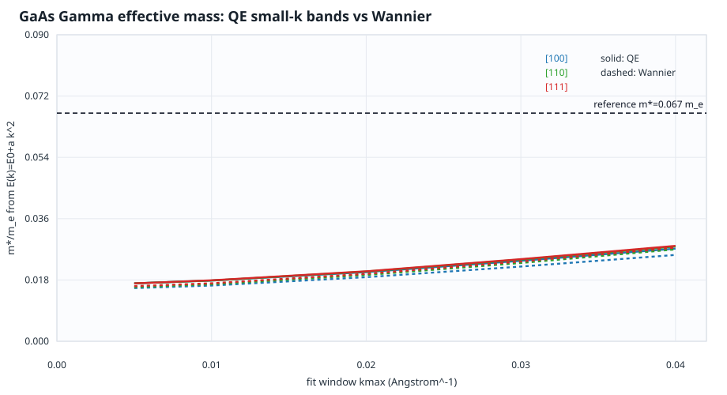
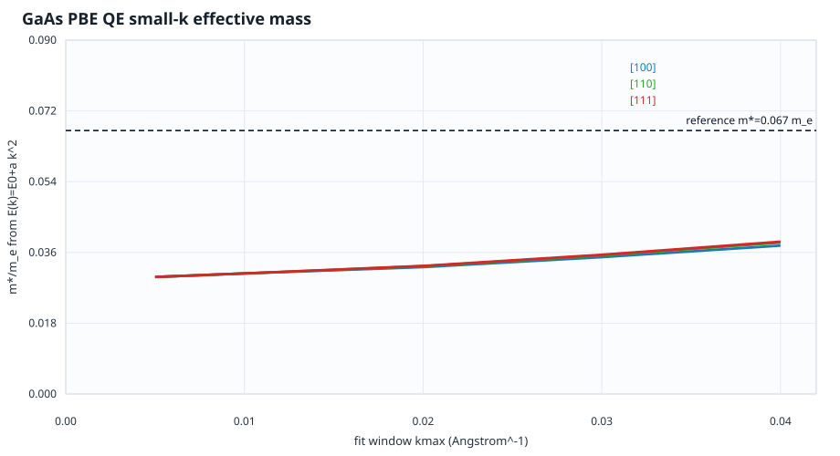
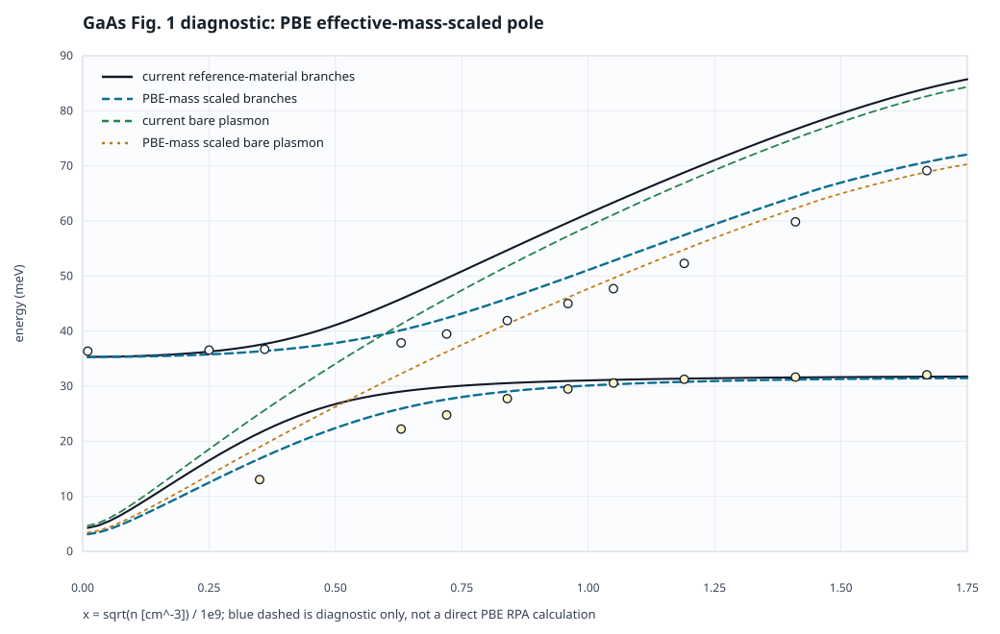
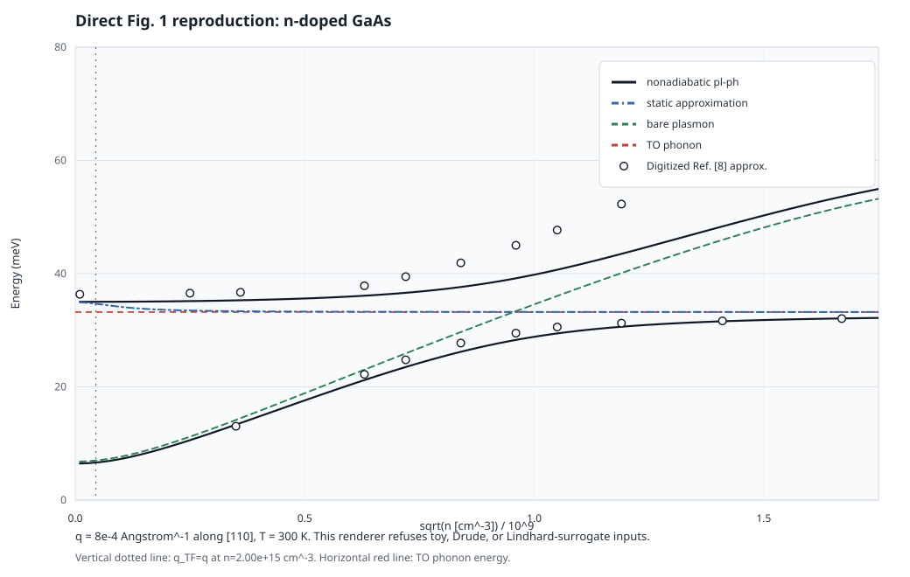
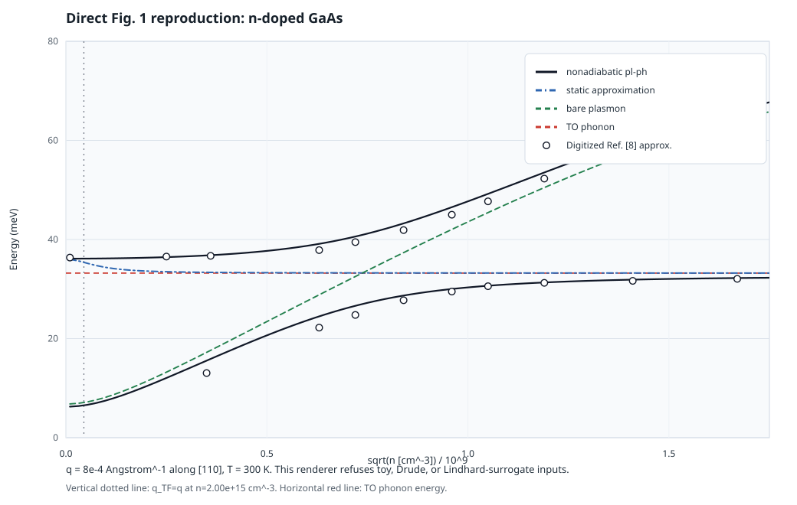
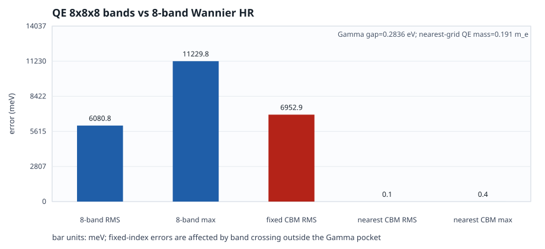

Direct Fig. 1 Reproduction Gate
The workflow has been switched away from approximate Fig. 1 panels. A local strict renderer now accepts only real first-principles input tables plus explicitly marked experimental or digitized comparison points for the paper Fig. 1 reproduction, and a first-pass Wannier-RPA result is now available.
Policy
Direct Fig. 1 reproduction means the plotted curves must come from the actual GaAs Fig. 1 data chain: Wannier/RPA electronic dielectric response, plasmon-pole fitting, first-principles long-range coupling, the paper static construction, and explicitly marked approximate Ref. [8] guide points. The renderer refuses inputs marked as toy, surrogate, Drude, mock, analytic, parabolic, or numerical-Lindhard surrogate.
The supplemental-material RPA response and dielectric-function formulas are now documented on the RPA dielectric supplement page. That page defines the required delta chi0(q,omega), epsilon_el^{-1}(q,omega), Coulomb kernel, plasmon-pole fit, and static construction.
The RPA implementation is now connected to the local GaAs Wannier Hamiltonian. fig1_wannier_direct.py reads gaas_zb_prim_hr.dat, evaluates H^W(k), diagonalizes H(k) and H(k+q), forms |C(k+q)^dagger C(k)|^2, solves the supplement-form free-carrier RPA response with absolute BZ weights, fits plasmon-pole parameters, and writes the direct Fig. 1 CSVs consumed by fig1_direct_reproduction.py.
The long-range polar coupling step is now documented on the polar-coupling page. The implementation parses QE Born effective charges, the high-frequency dielectric tensor, atomic masses, primitive-cell volume, the exact-Gamma LO eigenvector, and the Cartesian Fig. 1 q direction, then computes the polar strength from the SI nonanalytic dynamical matrix. The DFPT LO-TO splitting is retained as an independent validation target.
A material-input comparison figure is now available on the polar-coupling page and as docs/assets/gaas_material_input_comparison.svg. It keeps the same Wannier-RPA PPM table, rebuilds each effective LO from TO^2+S_polar, then compares reference GaAs, fixed-cell PBE QC, and LDA QC dielectric/Born inputs.
Required Inputs
| Input | Required provenance | Minimum columns |
|---|---|---|
| Nonadiabatic hybrid branches | wannier_rpa or first_principles_rpa | density_cm_minus_3, branch_index, energy_meV |
| Static approximation branch | wannier_rpa or first_principles_rpa | density_cm_minus_3, energy_meV |
| Bare plasmon | wannier_rpa or first_principles_rpa | density_cm_minus_3, energy_meV |
| Ref. [8] guide points | paper_digitized; legacy experiment and raman_experiment are accepted by the validator only for backward-compatible CSV checks | density_cm_minus_3, energy_meV, series |
| TO phonon reference | Scalar CLI value from validated phonon/Raman reference | --to-phonon-mev |
Each CSV must declare provenance in a comment line such as # provenance: wannier_rpa or in a provenance column.
Run Command
The current first-pass direct result was generated with:
module reset
ml anaconda/2024.02-py311
source "$(conda info --base)/etc/profile.d/conda.sh"
conda activate Tmat
python fig1_wannier_direct.py \
--mesh 41 41 41 \
--density-count 81 \
--omega-count 181 \
--omega-max-mev 180 \
--out-dir dft/gaas/fig1_direct \
--docs-svg docs/assets/gaas_fig1_direct.svgmodule reset
ml anaconda/2024.02-py311
source "$(conda info --base)/etc/profile.d/conda.sh"
conda activate Tmat
python fig1_direct_reproduction.py \
--nonadiabatic-csv dft/gaas/fig1_direct/gaas_fig1_nonadiabatic.csv \
--static-csv dft/gaas/fig1_direct/gaas_fig1_static.csv \
--bare-plasmon-csv dft/gaas/fig1_direct/gaas_fig1_bare_plasmon.csv \
--raman-csv dft/gaas/fig1_direct/gaas_fig1_raman.csv \
--to-phonon-mev 32.26623053 \
--out-svg docs/assets/gaas_fig1_direct.svgmodule reset
ml anaconda/2024.02-py311
source "$(conda info --base)/etc/profile.d/conda.sh"
conda activate Tmat
python fig1_material_input_comparison.pyThe last command generated the current reference-material direct SVG from local CSVs with epsilon_inf=10.89, |Z*|=2.18, and LOeff=sqrt(TO^2+S_polar). The renderer validated 2 nonadiabatic branches, 1 static branch, 81 bare-plasmon points, and 20 approximate Ref. [8] guide points. It continues to reject toy, Drude, mock, analytic, parabolic, and numerical-Lindhard surrogate provenance.
First-Pass Result
The current HPC folder has GaAs SCF/DFPT phonon results, stock-EPW/Wannier artifacts including gaas_zb_prim_hr.dat, and a first-pass direct Fig. 1 data chain under dft/gaas/fig1_direct/. These CSVs are summarized here but are not uploaded as raw data.
| Item | Value | Status |
|---|---|---|
| RPA integration | 41^3 Gamma cube, half-width 0.035, BZ weight sum 3.43e-4 | Completed |
| Band tracking | 20285 k points inside 0.3 eV; min transition overlap 0.9994421923 | Validated for first pass |
| PPM | 81/81 fits with status=ok; bare plasmon 4.665-84.336 meV | Completed |
| Long-range coupling | Reference sqrt(S_polar)=14.22302904168 meV; LOeff=35.26193680836 meV | Built from reference GaAs epsilon_inf=10.89, |Z*|=2.18, the same local TO mode, and the same Wannier-RPA PPM table. |
| Gamma effective mass | 0.0159 m_e at kmax=0.005 Angstrom^-1; 0.0266 m_e near max-density kF=0.0449 Angstrom^-1 | The local Wannier conduction band is much lighter than reference GaAs 0.067 m_e, giving a likely high-density plasmon-scale overestimate of about 1.59x. |
| Mass-scaled diagnostic | Guide RMSE 9.287120 -> 4.573280 meV | Scaling the PPM pole by sqrt(m*_W(kF)/0.067) confirms effective mass is important, but it overcorrects the highest-density upper branch from +14.929752 to -12.851112 meV. |
| QE/Wannier band check | Gamma CBM diff 0.113 meV; nearest-CBM RMS 0.052 meV | The local HR file contains the QE CBM on the coarse grid, but fixed band index 4 stops tracking it outside the Gamma pocket because of band crossing. |
| Small-k QE mass check | 0.0170 m_e at kmax=0.005 Angstrom^-1; 0.0277 m_e at kmax=0.040 Angstrom^-1 | Job 17658500 completed on shared with 128 CPUs. Direct QE and Wannier curvatures agree closely, so the too-light mass is already in the current QE electronic structure. |
| PBE small-k mass check | 0.0298 m_e at kmax=0.005 Angstrom^-1; 0.0383 m_e at kmax=0.040 Angstrom^-1 | Job 17658961 completed from the PBE 12x12x12, 100/400 Ry SCF save. PBE improves the LDA mass but is still lighter than reference GaAs 0.067 m_e. |
| PBE-mass Fig. 1 diagnostic | Guide RMSE 9.287120 -> 2.900547 meV | Scaling the current PPM pole by sqrt(m_current(kF)/m_PBE(kF)) moves the upper branch close to the guide. The highest-density upper residual becomes +1.565909 meV, down from +14.929752 meV. |
| Full-PBE direct rerun | 81/81 PPM ok; bare plasmon 6.806-53.231 meV | Completed from refit PBE HR band 7, PBE epsilon_inf=17.923182183, PBE Born charges, PBE TO 33.217040 meV, and LOeff=34.955091 meV. Lower-branch guide RMSE is 0.957 meV; upper-branch guide RMSE is 7.193 meV. |
PBE HR + reference epsilon_inf | All-guide RMSE 1.326 meV | Uses the refit PBE HR, PBE Born charges, and PBE TO/eigenvector, but replaces epsilon_inf by reference 10.89 in both RPA and polar coupling. The bare plasmon is 6.811-65.767 meV, LOeff=36.033063 meV, and both branches closely follow the digitized guide. |
| Material-input branch comparison | Reference gap 14.224 meV; PBE QC 10.887 meV; LDA QC 7.333 meV | Diagnostic completed with the same Wannier-RPA PPM table and scenario-specific effective LO energies. |
| Hybrid/static outputs | Nonadiabatic 4.263-85.722 meV; static 32.277-35.181 meV | Reference-material CSVs passed the strict direct renderer check. |
| Digitized Ref. [8] guide | Axis-calibrated guide RMSE 9.287120 meV; lower 4.149068 meV; upper 11.947152 meV | The plotted circles are approximate visual digitization points. The main-panel axes were calibrated from printed ticks, and the low-density upper-branch points were read from the inset because the main panel is covered there. |









The full-PBE redraw is now the material-consistent PBE comparison: it uses PBE electronic screening and PBE long-range polar input, not the mass-scaled diagnostic. It improves the lower branch substantially, while the upper branch remains low at high density because the complete PBE dielectric screening is stronger than the reference-material input used by the paper-like curve. Replacing only epsilon_inf by 10.89 largely removes that upper-branch discrepancy.
Long-Range Polar Coupling Update
The final nonadiabatic CSV now records the first-principles coupling ingredients used for the hybrid branches: polar_strength_ev2, born_mode_charge_abs, eps_inf_direction, direction_strength_ratio, and coupling_source. For the current cubic GaAs [110] run, the Born/eigenvector direction ratio is 1.000000000000. The SI absolute strength is 0.0315% lower than the LO-TO splitting check, a small difference consistent with rounded QE text-output inputs.
| Diagnostic | Value | Meaning |
|---|---|---|
| q direction | (0.7071067812, 0.7071067812, -6.1e-17) | Fig. 1 q converted from primitive reciprocal coordinates to Cartesian [110]. |
| ASR Born charges | Ga +2.43775, As -2.43775 | Parsed from local QE PH output. |
| Mode effective charge | 0.4055820745304 | |sum_k qhat.Z*_k.e_k/sqrt(M_k)|. |
sqrt(S_polar) | 5.071342392659 meV | Coupling uses c = omega_pl sqrt(S_polar). |
Steps 1-4 Validation
The requested convergence and diagnostic pass is complete. It covers RPA convergence, conduction-band window validation, RPA dielectric-function inspection, and PPM fit quality. The compact CSV outputs remain local under dft/gaas/fig1_convergence/; the public page includes only small SVG summaries.
| Step | Result | Conclusion |
|---|---|---|
| 1. RPA convergence | Half-width, k-mesh, frequency-grid, and eta scans at five representative densities. | k-mesh changes from 31^3 to 51^3 move representative plasmon energies by at most 0.232 meV; frequency-grid changes are below 0.003 meV; eta 2-5 meV changes are below 0.463 meV. |
| 2. Band window | Gamma cube half-widths 0.025, 0.030, 0.035, 0.040 tested. | 0.035 is retained. It has two-spin capacity 4.96x the highest-density target, positive band energies in the pocket, and min transition overlap 0.999442. 0.040 is rejected because the selected band dips below the Gamma CBM and the seed-overlap diagnostic collapses. |
| 3. RPA dielectric function | Four representative -Im epsilon_el^{-1} spectra are plotted against their PPM fits. | The loss peaks are smooth and the fitted PPM peak tracks the RPA peak from the crossing region through the high-density end. |
| 4. PPM fit | Final 81-density run has 81/81 fits with status=ok. | Mean relative residual is 1.87e-2; maximum is 1.50e-1 at sqrt(n)/10^9=1.75, the high-density edge. |


The next planned step is a heavier validation against the supplemental dense-grid protocol, or a larger production run if the full 200x200x200 RPA workflow is affordable.
Wannier/EPW Prep Status
The first real-input preparation step is now local. The earlier local EPW source-debug branch has been stopped, EPW is restored to stock source, and the active retry uses a clean bands-style input rather than an nscf input controlled by nosym/noinv. QE 7.5 provides wannier90.x, pw2wannier90.x, and the restored epw.x; EPW starts as version 6.0 from the QE tree. The current retry is EPW-only and changes the fine-grid definition to explicit filkf/filqf files.
| Item | Status | Detail |
|---|---|---|
| Local templates | Clean reset | dft/gaas/primitive/epw_stock_bands/ now contains the active SCF, bands, PH-with-fildvscf, stock EPW input, file-mesh EPW restart input, Fig. 1 q-point, explicit fine-k mesh generator, and Slurm templates. The old debug wannier_epw/ directory was deleted. |
| Bands setup | Prepared | The electronic full-k step is now calculation='bands', not calculation='nscf'. It uses an explicit 8x8x8, 512-point crystal k mesh with nbnd=24 and contains no nosym or noinv keywords. |
| Target Wannier basis | Prepared | The stock EPW input keeps nbndsub=8, Ga/As sp3 projections, exclude_bands = 1-5, dis_froz_min=-5.0 eV, and dis_froz_max=12.2 eV. Wannierization is done inside EPW with wannierize=.true.. |
| EPW phonon input | Prepared | The clean PH input uses the same 4x4x4 q grid and explicitly writes fildvscf='dvscf'. SCF/PH use tmp_epw_stock_scf, while bands/EPW use tmp_epw_stock_bands so the PH wavefunctions are not overwritten by the bands calculation. |
| Slurm job | EPW grid mismatch | Job 17626030 ran on shared node a063 with 128 CPUs. SCF and bands completed with JOB DONE, and PH completed all 8 irreducible q points with nonempty dyn1-dyn8 and dvscf_q1-dvscf_q8. Stock EPW then reached Wannierization, kgmap, epb writing, and Wannier-representation output before stopping at kpmq_map: k+q does not fall on k-grid. The current Fig. 1 q point is not commensurate with the 40x40x40 fine k mesh. |
| EPW file-mesh restart | Completed | Job 17628159 ran on shared node a063 with 128 CPUs and completed with exit code 0:0. It reused the completed Wannier-representation output with epwread=.true., read filkf='gaas_fine_k_40x40x40.kpt' and filqf='gaas_fig1_q.qpt', and removed nkf*/nqf* so the Fig. 1 q point was handled as a file-defined interpolation point rather than a commensurate homogeneous-grid q. EPW selected the single q point and completed one interpolation pass without the previous kpmq_map error. |
Verification
The direct Fig. 1 gate, current stock-EPW templates, and the new RPA response core are covered by local tests. The combined local regression run now has 71 passing unittest cases in the requested Anaconda/Tmat environment. The tests verify identity_delta overlap, Wannier90 *_hr.dat parsing, H^W(k) Hermiticity, full-band overlap unitarity, selected-band RPA wiring, Gamma-centered k-mesh generation, smoke CSV writing, absolute-weight density solving, PPM fallback behavior, Born/eigenvector polar coupling normalization, polar direction-invariance scanning, Gamma effective-mass diagnostics, mass-scaled Fig. 1 diagnostics, QE/Wannier band checks, final two-branch hybrid CSV generation, delta chi0, U_q, and epsilon_el^{-1}.
Not Uploaded
No paper PDF pages, raw RPA data, raw QE outputs, wavefunctions, private files, or credentials are included in this GitHub Pages report. The local CSVs under dft/gaas/fig1_direct/ are summarized but not uploaded; only the small rendered SVG is included. Future convergence-scan tables should remain local unless confirmed public-safe and small.